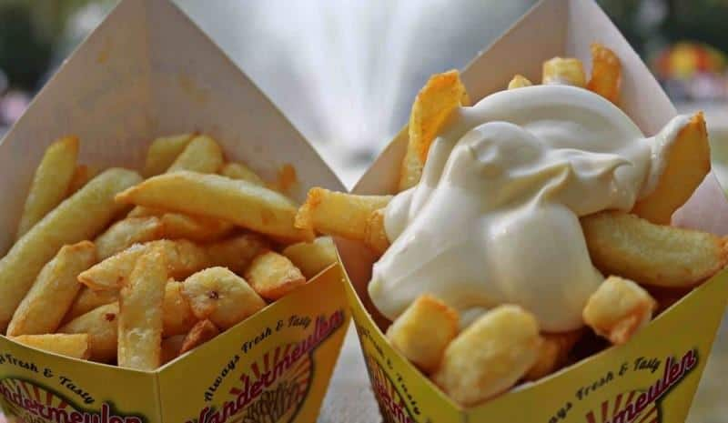

Paling Dikenal
Belgian Waffle
Waffle renyah bertekstur light & airy dengan grid dalam yang dalam dan lebar, khas kota Brussels dan Liège.
Pelajari asal-usul, tradisi, dan resep otentik makanan khas Belgia yang telah membentuk cita rasa Eropa selama berabad-abad.
Baca Sejarah Lihat ResepHidangan yang telah menjadi warisan budaya kuliner dunia
Waffle renyah bertekstur light & airy dengan grid dalam yang dalam dan lebar, khas kota Brussels dan Liège.

Semur sapi yang dimasak perlahan bersama bir Belgia gelap selama 2–3 jam. Hidangan rumahan paling dicintai di Ghent.

Cokelat praline ditemukan oleh Jean Neuhaus pada 1912 di Brussels. Kini Belgia menjadi ibu kota cokelat dunia.

Kentang goreng double-fried dalam lemak sapi — bukan berasal dari Prancis. Tradisi menggoreng kentang di Belgia dimulai sejak tahun 1680.
Warisan rasa dari persimpangan budaya Eropa selama berabad-abad
Masakan Belgia merupakan perpaduan pengaruh dari Prancis, Belanda, dan Jerman — tiga negara tetangga yang membentuk identitas budaya Belgia. Letak geografis Belgia di jantung Eropa menjadikannya jalur perdagangan penting sejak Abad Pertengahan.
Pada abad ke-17, wilayah yang kini disebut Belgia berada di bawah kekuasaan Spanyol, kemudian Austria. Pengaruh ini membawa teknik memasak Mediterania yang berpadu dengan bahan-bahan lokal: kentang, sawi, bir, dan produk susu berkualitas tinggi dari padang rumput Ardennes.
Revolusi Industri pada abad ke-19 mengubah cara memasak orang Belgia. Produksi cokelat skala besar dimulai ketika Philippe Suchard memperkenalkan mesin penggilingan kakao pada 1826. Belgia segera menjadi salah satu pengekspor cokelat terbesar di dunia. — Sumber: Belgian Chocolate Museum, Brussels
Hari ini, kuliner Belgia diakui secara internasional. Bir Belgia terdaftar sebagai Warisan Budaya Takbenda UNESCO sejak 2016, dan waffle Belgia telah menjadi simbol gastronomi yang dikenal di seluruh penjuru dunia.
Momen penting yang membentuk identitas kuliner Belgia dari abad ke abad
Penduduk di lembah Sungai Meuse mulai menggoreng kentang tipis sebagai pengganti ikan saat sungai membeku di musim dingin. Inilah asal-usul kentang goreng Belgia.
Jean Neuhaus membuka toko apotek di Galeri Saint-Hubert, Brussels, yang juga menjual cokelat berlapis. Awal mula industri cokelat Belgia modern.
Louise Agostini, cucu Jean Neuhaus, menciptakan teknik praline — cangkang cokelat keras berisi krim lembut. Revolusi dalam dunia konfeksi cokelat.
Waffle Liège pertama kali diperkenalkan secara resmi ke dunia internasional di Brussels World Expo, menarik jutaan pengunjung dari seluruh dunia.
Maurice Vermersch memperkenalkan “Belgian Waffle” di New York World’s Fair. Nama sederhana itu membuatnya langsung populer di seluruh Amerika.
Budaya pembuatan dan apresiasi bir Belgia resmi diakui sebagai Warisan Budaya Takbenda UNESCO, mengukuhkan posisi Belgia dalam peta gastronomi dunia.
Karakteristik dan informasi gizi hidangan ikonik Belgia
| Makanan | Asal Daerah | Bahan Utama | Kalori / Porsi | Waktu Masak | Era Muncul | Dikenal Global |
|---|---|---|---|---|---|---|
| Belgian Waffle | Brussels / Liège | Tepung, Telur, Mentega, Pearl Sugar | ~350 kkal | 30 menit | 1958 – kini | ★★★★★ |
| Stoofvlees | Ghent / Flandern | Daging Sapi, Bir Gelap, Bawang | ~480 kkal | 2–3 jam | Abad ke-19 – kini | ★★★★ |
| Cokelat Praline | Brussels | Kakao, Gula, Susu, Krim | ~155 kkal/30g | — | 1912 – kini | ★★★★★ |
| Belgian Frites | Namur / Wallonia | Kentang, Lemak Sapi | ~400 kkal | 30 menit | Abad ke-17 – kini | ★★★★★ |
| Moules-Frites | Brussels | Kerang, Anggur Putih, Bawang | ~520 kkal | 25 menit | Awal abad ke-20 | ★★★★ |
| Speculoos | Seluruh Belgia | Tepung, Gula Merah, Rempah | ~150 kkal/3biji | 20 menit | Abad ke-18 – kini | ★★★★ |
| Nilai kalori merupakan perkiraan rata-rata, dapat bervariasi per resep | Sumber: Belgian Culinary Heritage Institute & Euromonitor | |||||
Keindahan visual masakan dan bahan-bahan khas Belgia


Hal-hal unik yang jarang diketahui tentang kuliner Belgia
Kentang goreng populer ini sebenarnya dari Belgia (abad ke-17), bukan Prancis. Tentara Amerika menyebutnya “French” karena tentara Belgia berbahasa Prancis.
Belgia memproduksi lebih dari 220.000 ton cokelat per tahun. Bandara Brussels adalah toko cokelat tunggal terbesar di dunia.
Waffle Brussels dan waffle Liège adalah dua hal sangat berbeda: Brussels lebih ringan & renyah, Liège lebih padat dengan pearl sugar karamel.
Budaya bir Belgia masuk Daftar Warisan Budaya Takbenda UNESCO sejak 2016. Terdapat lebih dari 1.500 variasi bir Belgia yang berbeda.
Crevettes grises dikupas tangan oleh penduduk lokal di Oostduinkerke — praktik yang juga diakui sebagai warisan budaya tak benda UNESCO.
Orang Belgia rata-rata menghabiskan lebih dari 2 jam untuk makan malam keluarga — kualitas selalu di atas kecepatan.
5 Oleh-Oleh Kuliner Paling Autentik dari Belgia:
Panduan langkah demi langkah memasak hidangan autentik di rumah
Bahan-Bahan
Langkah Memasak
Bahan-Bahan
Langkah Memasak
Bahan-Bahan
Langkah Membuat
Bahan-Bahan (2 gelas)
Langkah Membuat
Uji pengetahuanmu tentang kuliner Belgia dan daftarkan emailmu untuk artikel terbaru
Isi kuis singkat ini dan daftarkan emailmu untuk menerima artikel resep terbaru